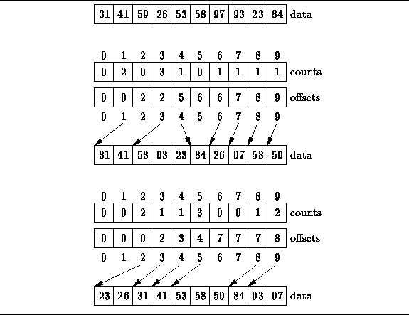

Radix
Introduction
Radix sort is one of the linear sorting algorithms for integers.
It functions by sorting the input numbers on each digit, for each of the digits in the numbers.
However, the process adopted by this sort method is somewhat counterintuitive, in the sense that the numbers are sorted on the least-significant digit first, followed by the second-least significant digit and so on till the most significant digit.

To appreciate Radix Sort, consider the following analogy: Suppose that we wish to sort a deck of 52 playing cards (the different suits can be given suitable values,
for example 1 for Diamonds, 2 for Clubs, 3 for Hearts and 4 for Spades).
The 'natural' thing to do would be to first sort the cards according to suits, then sort each of the four seperate piles, and finally combine the four in order. This approach, however, has an inherent disadvantage. When each of the piles is being sorted, the other piles have to be kept aside and kept track of.
If, instead, we follow the 'counterintuitive' aproach of first sorting the cards by value, this problem is eliminated. After the first step, the four seperate piles are combined in order and then sorted by suit. If a stable sorting algorithm (i.e. one which resolves a tie by keeping the number obtained first in the input as the first in the output) it can be easily seen that correct final results are obtained.
As has been mentioned, the sorting of numbers proceeds by sorting the least significant to most significant digit.
For sorting each of these digit groups, a stable sorting algorithm is needed.
Also, the elements in this group to be sorted are in the fixed range of 0 to 9. Both of these characteristics point towards the use of Counting Sort as the sorting algorithm of choice for sorting on each digit (If you haven't read the description on Counting Sort already, please do so now).
Radix Sort takes O(d*(n+b)) time where b is the base for representing numbers, for example, for decimal system, b is 10. What is the value of d? If k is the maximum possible value, then d would be O(\log_b(k)).
So overall time complexity is O((n+b)*\log_b(k)).
Which looks more than the time complexity of comparison based sorting algorithms for a large k. Let us first limit k. Let k <= nc where c is a constant. In that case, the complexity becomes O(n\log_b(n)).
But it still doesn’t beat comparison based sorting algorithms.
What if we make value of b larger?. What should be the value of b to make the time complexity linear?
If we set b as n, we get the time complexity as O(n).
In other words, we can sort an array of integers with range from 1 to nc if the numbers are represented in base n (or every digit takes \log_2(n) bits).
Algorithm
1) Do following for each digit i where i varies from least significant digit to the most significant digit.
a) Sort input array using counting sort (or any stable sort) according to the i’th digit.
Example
Original, unsorted list:
170, 45, 75, 90, 802, 2, 24, 66
Sorting by least significant digit (1s place) gives:
170, 90, 802, 2, 24, 45, 75, 66
Notice that we keep 802 before 2, because 802 occurred before 2 in the original list, and similarly for pairs 170 & 90 and 45 & 75.
Sorting by next digit (10s place) gives:
802, 2, 24, 45, 66, 170, 75, 90
Notice that 802 again comes before 2 as 802 comes before 2 in the previous list.
Sorting by most significant digit (100s place) gives:
2, 24, 45, 66, 75, 90, 170, 802
It is important to realize that each of the above steps requires just a single pass over the data, since each item can be placed in its correct bucket without having to be compared with other items.
Some radix sort implementations allocate space for buckets by first counting the number of keys that belong in each bucket before moving keys into those buckets. The number of times that each digit occurs is stored in an array. Consider the previous list of keys viewed in a different way:
170, 045, 075, 090, 002, 024, 802, 066
The first counting pass starts on the least significant digit of each key, producing an array of bucket sizes:
2 (bucket size for digits of 0: 170, 090)
2 (bucket size for digits of 2: 002, 802)
1 (bucket size for digits of 4: 024)
2 (bucket size for digits of 5: 045, 075)
1 (bucket size for digits of 6: 066)
A second counting pass on the next more significant digit of each key will produce an array of bucket sizes:
2 (bucket size for digits of 0: 002, 802)
1 (bucket size for digits of 2: 024)
1 (bucket size for digits of 4: 045)
1 (bucket size for digits of 6: 066)
2 (bucket size for digits of 7: 170, 075)
1 (bucket size for digits of 9: 090)
A third and final counting pass on the most significant digit of each key will produce an array of bucket sizes:
6 (bucket size for digits of 0: 002, 024, 045, 066, 075, 090)
1 (bucket size for digits of 1: 170)
1 (bucket size for digits of 8: 802)
At least one LSD radix sort implementation now counts the number of times that each digit occurs in each column for all columns in a single counting pass. (See the external links section.) Other LSD radix sort implementations allocate space for buckets dynamically as the space is needed.
Advantages
It is very fast and easy algorithm
Disadvantages
- This algorithm takes more space
- Radix sort is slower than quicksort and mergesort
- It is less flexible
Applications
It is used for sorting when there is time constraint.
Run Code